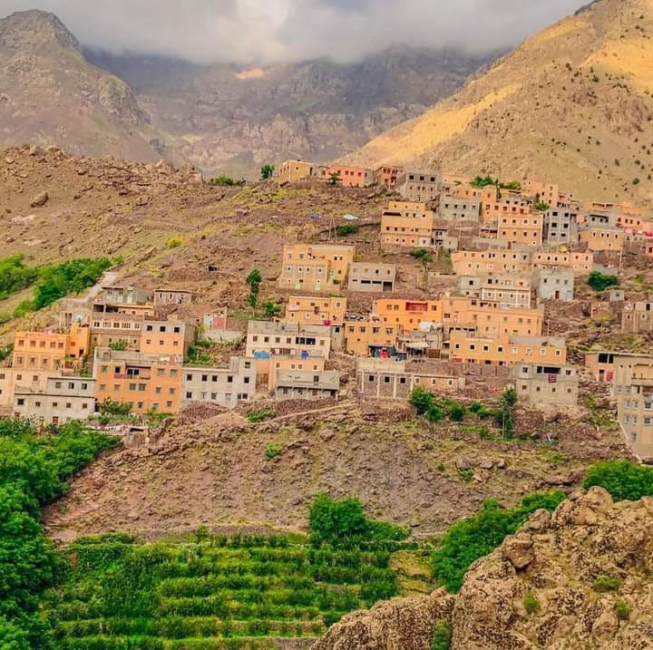
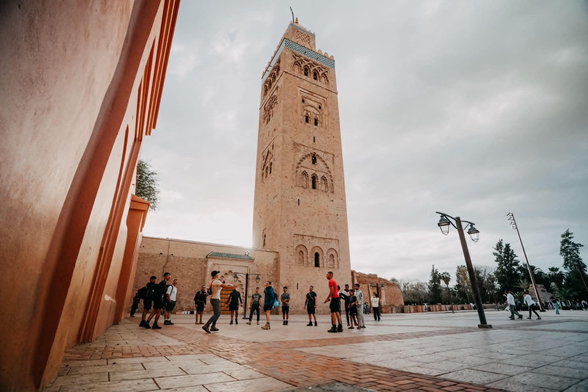
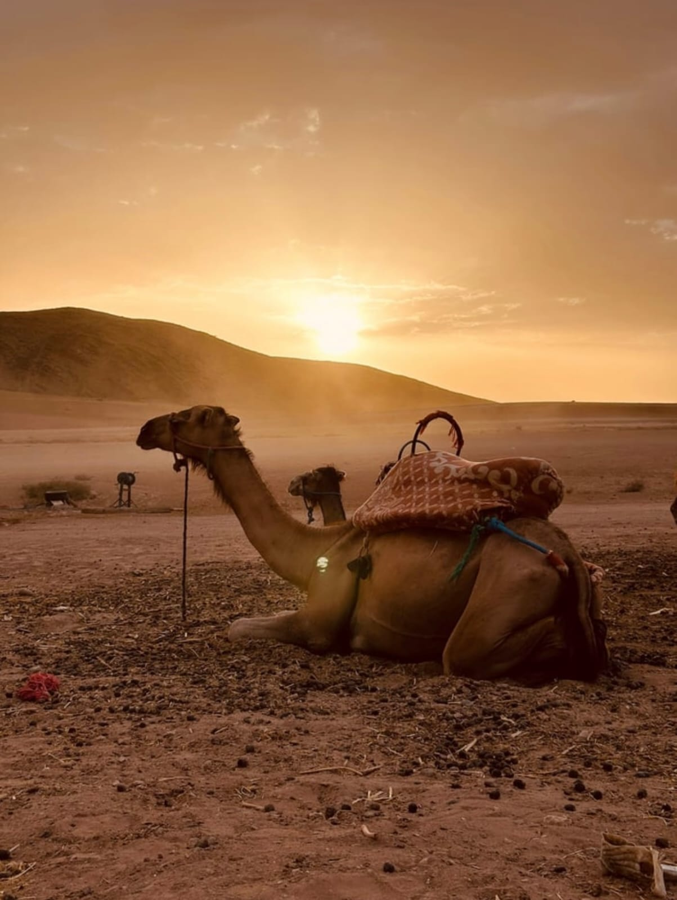

Day 1:
We will pick you up from Marrakech and drive to Imlil (1,740 m), the gateway to the High Atlas Mountains. From here, you’ll begin your hike towards one of the highest local peaks — Isk Summit (2,700 m) — offering incredible panoramic views over the valley.
After the climb, you’ll descend through beautiful landscapes and visit a few goat shelters where locals keep their animals in the high mountains.
In the heart of nature, our private cook will prepare a fresh and delicious traditional Berber lunch for you.
Later, we continue down to the last village of the Imlil Valley, Aroumd (2,000 m), where you’ll spend the night in a Berber family guesthouse.
In the evening, you can relax in a traditional Berber hammam and enjoy a gentle massage after your long day of trekking. Dinner will be homemade local cuisine, full of authentic flavors.
Day 2:
After breakfast, we’ll visit one of the oldest houses in the village and share a cup of mint tea with a welcoming Berber family.
Then, we’ll walk through terraced fields and meet local farmers growing apples, walnuts, and cherries. You’ll have the chance to learn about Berber traditions and daily life in the mountains.
We’ll continue to the beautiful waterfalls near Imlil, where you can relax and take photos.
Lunch will be served in Imlil before your transfer back to Marrakech in the afternoon.
What to Expect
Stunning mountain views
Meet friendly and welcoming Berber people
Experience a traditional hammam & massage
Guided trekking through authentic villages
1Fresh, home-cooked Berber meals
Overnight stay in a local guesthouse

Change the mood with a relaxing two-day escape from Marrakech to the blue, musical, and peaceful city of Essaouira. This tour is perfect for families or friends looking for a calm and enjoyable break by the Atlantic coast.
Discover the charming medina, wander through its artistic alleys, enjoy the rhythm of Gnawa music, and taste freshly grilled seafood by the ocean. Essaouira offers the perfect mix of culture, relaxation, and coastal beauty.
Itinerary
Day 1: Marrakech – Essaouira
In the morning, our driver will pick you up from your accommodation in Marrakech. On the way, you will enjoy the scenic landscapes of Morocco, including vast open spaces and rolling hills.
There will be several interesting stops along the road:
A short break at a café for coffee or snacks.
A visit to a local Argan oil cooperative, where you will learn about the traditional production process and the many benefits of Argan oil.
A stop at the famous “Goats in the Argan Trees,” where you can take photos of goats climbing the trees — a unique natural sight.
After approximately 3 hours of driving, you will arrive in Essaouira. Your driver can recommend a good seaside restaurant where you can enjoy fresh fish and local specialties.
In the afternoon, enjoy free time to explore the city at your own pace. Wander through the historic medina, enter through its impressive gates, discover local art galleries, and enjoy the sounds of traditional Gnawa music echoing through the alleys.
Later, relax with a walk along the beach before being transferred to your charming riad for an overnight stay with half board.
Day 2: Essaouira – Quad Biking Experience – Marrakech
Wake up in a peaceful atmosphere and enjoy a delicious breakfast at your riad.
In the morning, you will have time to explore more of Essaouira or relax by the beach.
Before returning to Marrakech, you will enjoy an exciting quad biking experience along the Atlantic coast. Ride across sandy beaches, coastal dunes, and open landscapes while enjoying the fresh ocean breeze. This activity is suitable for beginners and guided by professionals to ensure safety and fun.
After the quad biking adventure and lunch, meet your driver for the return journey to Marrakech.
Arrival in Marrakech in the late afternoon.
The price for this trip is
160 euro per personne per day including
Private transport during 2 days
English speaking guide
Breakfast in Argan cooperative
All meals
Hotel or riad in Essaouira
Travel insurance
Soft drinks
Tip
Quadbike

Escape the busy streets of Marrakech and discover the breathtaking beauty of the High Atlas Mountains and the rocky landscapes of the Agafay Desert on this unforgettable full-day adventure.
Your journey begins with a morning pick-up from your accommodation in Marrakech. Drive through scenic valleys and traditional Berber settlements before arriving in the picturesque village of Imlil, the gateway to Mount Toubkal, the highest peak in North Africa.
After a traditional Moroccan mint tea, start a guided hike through the beautiful villages of Arghen and Mezzik. Along the way, enjoy spectacular mountain scenery, terraced fields, walnut groves, cherry orchards, and authentic Berber life. Continue to the famous Imlil waterfalls, where you can relax and take memorable photos surrounded by stunning natural landscapes.
The trek then continues to Aroumd Village (Aremd), the last village in the Toubkal Valley and one of the most authentic Berber communities in the Atlas Mountains. Here, enjoy a traditional homemade lunch in a Berber family house with panoramic views of Mount Toubkal and the surrounding peaks.
After lunch, continue your walk through the charming village of Targa Imoula before returning to Imlil, where your driver will be waiting.
In the afternoon, travel through the spectacular Kik Plateau towards the Agafay Desert. Admire the changing landscapes as green mountain valleys give way to the unique rocky desert scenery. Upon arrival, enjoy a relaxing camel ride and traditional Moroccan tea while taking in the peaceful atmosphere and stunning desert views.
Finally, return to Marrakech in the late afternoon, bringing an end to a day filled with nature, culture, adventure, and unforgettable memories.
Highlights
Scenic drive from Marrakech to the Atlas Mountains
Guided hike through traditional Berber villages
Visit the beautiful Imlil waterfalls
Explore Aroumd Village, the last village in the Toubkal Valley
Traditional Berber lunch with mountain views
Discover local Berber culture and daily life
Enjoy panoramic views of Mount Toubkal (4,167m)
Drive through the spectacular Kik Plateau
Camel ride experience in the Agafay Desert
Traditional Moroccan mint tea in the desert
Perfect combination of mountains, culture, and desert landscapes
Why Book This Tour?
This unique day trip combines the best of Morocco in one unforgettable experience. Hike through the stunning Atlas Mountains, meet local Berber families, enjoy authentic Moroccan cuisine, and finish the day with a camel ride in the Agafay Desert. It is the perfect excursion for travelers looking to experience Morocco's natural beauty, culture, and adventure in a single day.
Duration: Full Day (8–10 Hours)
Departure: Marrakech
Difficulty: Easy to Moderate
Best for: Families, Couples, Solo Travelers, and Small Groups